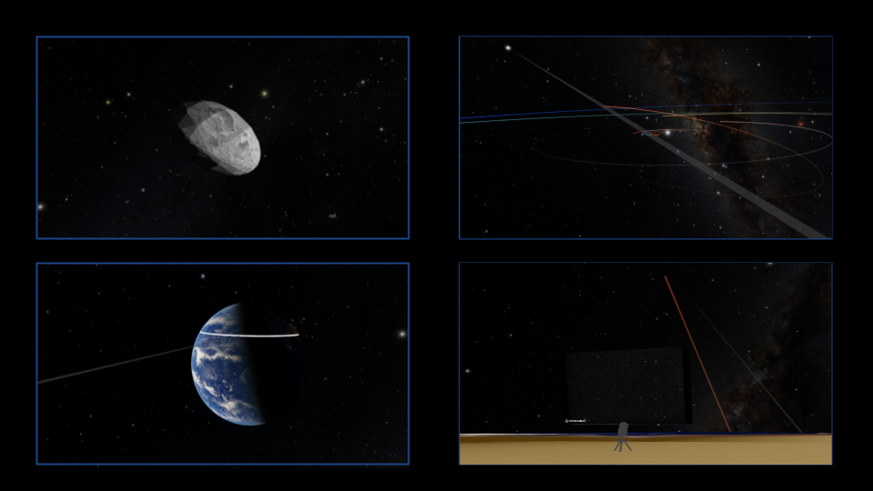
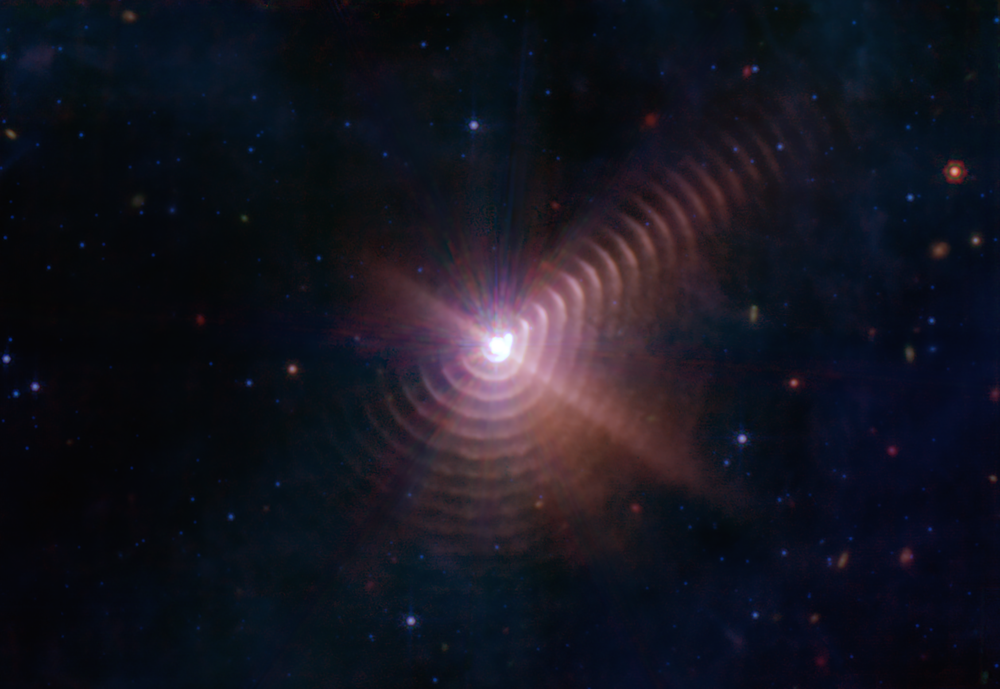

Extreme Variable Transients Pipeline (Aug 2025 - Present)
I am building a pipeline utilizing the LSST alert stream to find extreme variable transients to target and perform spectral follow-up using SDSS.

I am building a pipeline utilizing the LSST alert stream to find extreme variable transients to target and perform spectral follow-up using SDSS.

I participated in observation of the Patroclus-Menoetius occultation as a part of SwRI's LUCY Occultation team.

I worked alongside Ellie Hamilton to create visualizations of occultations for the planetarium software Openspace.

I looked to determine metallicities and wind-speeds of Wolf-Rayet stars to compare to theoretical cerrelation between the two properties.
Science communication is one of my passions, and here I focus on the students and the public that we serve.
Department of Physics and Astronomy, University of North Georgia
Department of Physics and Astronomy, University of North Georgia
North Georgia Astronomical Observatory, University of North Georgia
George E. Coleman, Sr. Planetarium, University of North Georgia
If you want to reach out, please do so below or send me an email. Thanks :))